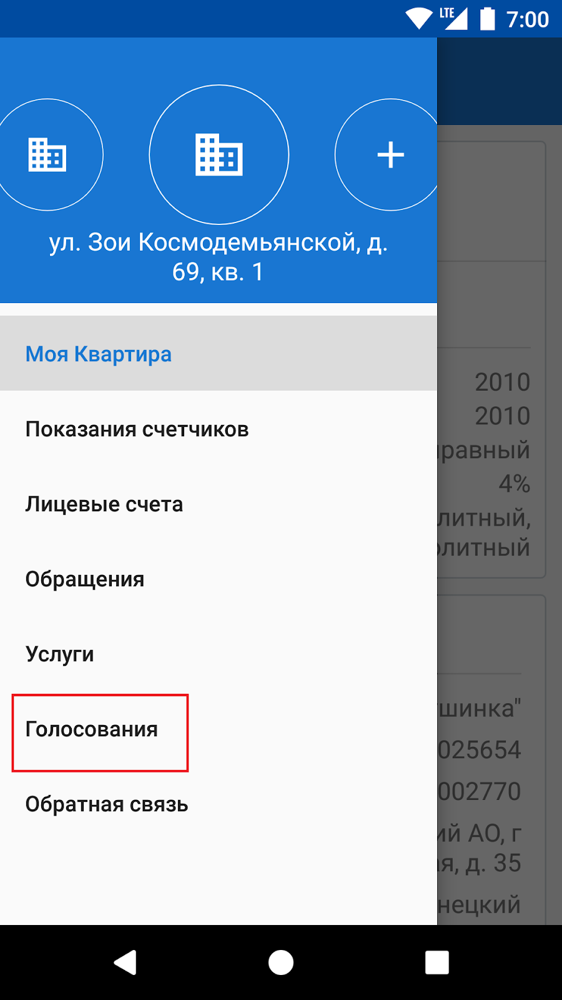
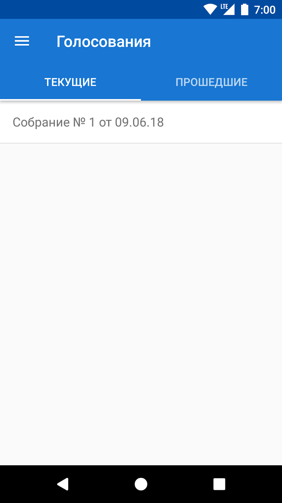
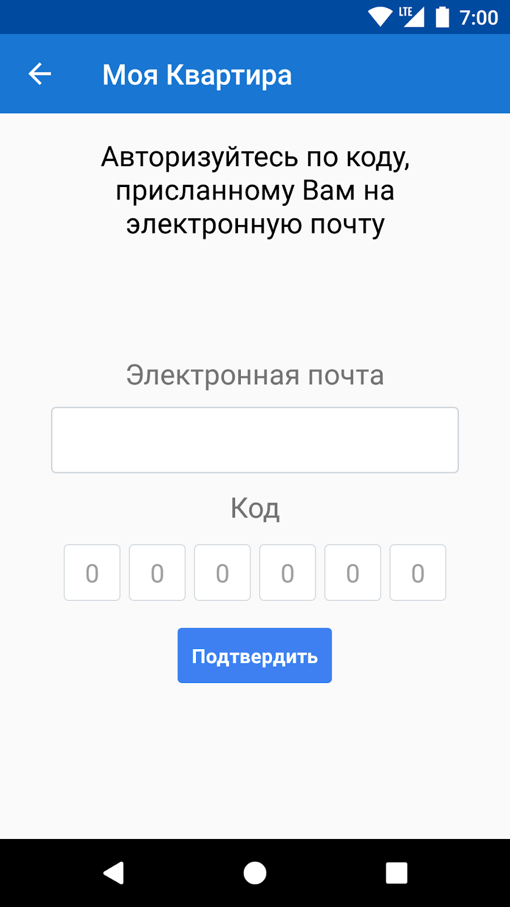
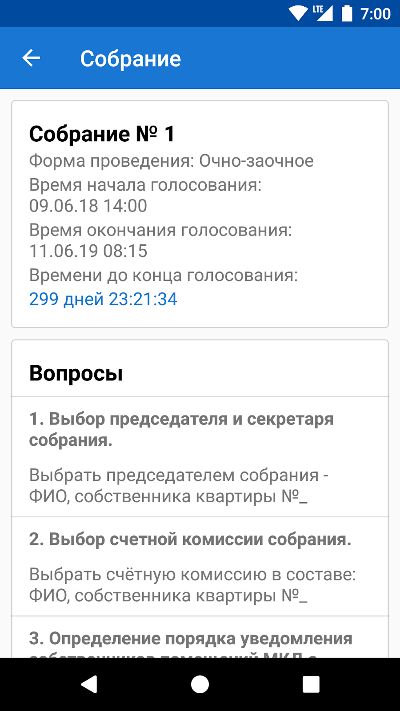
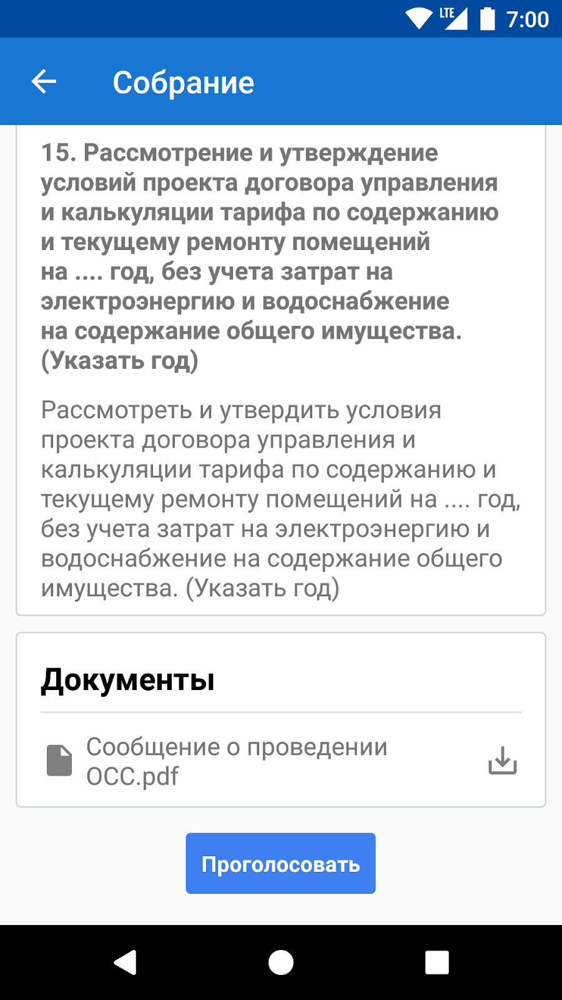
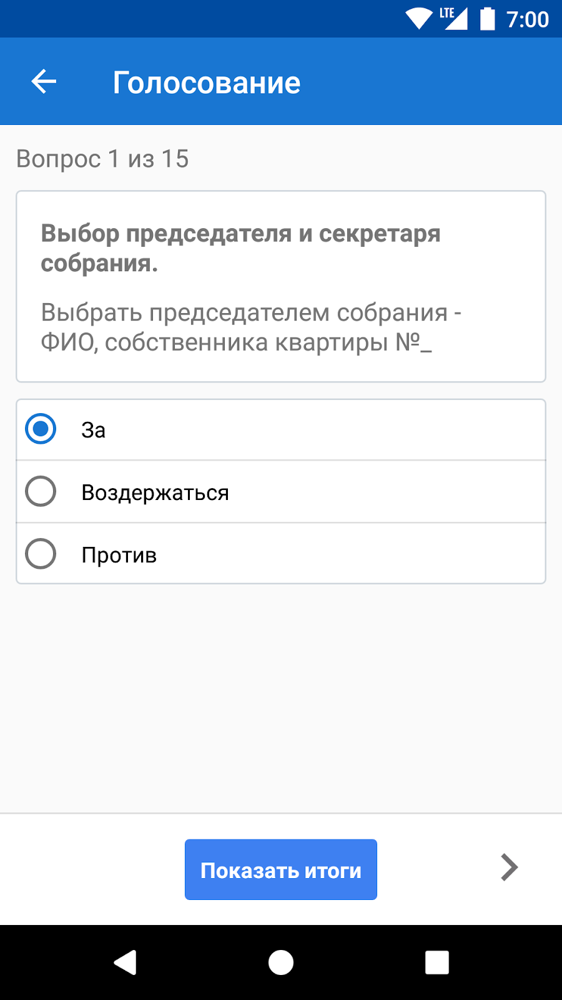
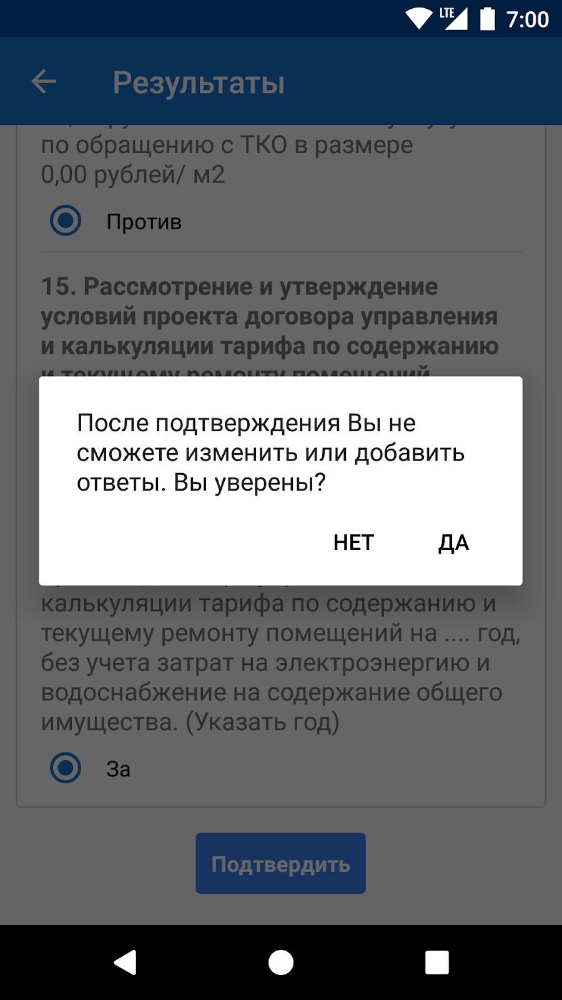

Эта инструкция объясняет, как скачать мобильное приложение «Моя Квартира» и пользоваться им для голосования на общем собрании собственников жилья в многоквартирном доме с использованием информационной системы.
- Зайдите в Google Play и скачайте мобильное приложение «Моя Квартира» .
- Приложение «Моя Квартира» установится автоматически.
- Добавьте в приложение адрес своего дома: наберите адрес вручную или дайте согласие на определение адреса по вашему местоположению.
- Добавьте в приложение номер своей квартиры (помещения).
- Войдите в раздел «Голосования», чтобы увидеть список голосований на ОСС.
- Выберите нужное голосование и подтвердите вашу личность, написав номер телефона или адрес электронной почты, которые вы указали в заявлении.
- Введите код, который вы получили по смс или email.
- Ознакомьтесь с вопросами, включёнными в повестку дня.
- Изучите прикреплённые к отдельным вопросам или ко всему собранию документы.
- Проголосуйте по всем вопросам сразу или пропустите какой-либо вопрос, чтобы вернуться к нему позже. Промежуточные результаты голосования сохраняются.
- После принятия решения по всем вопросам вы можете посмотреть промежуточные результаты и отправить результаты голосования администратору ОСС. Для этого нажмите кнопку «Подтвердить». Приложение покажет, что ваш голос учтён.
После того, как собрание закончится, вы сможете посмотреть результаты голосования.